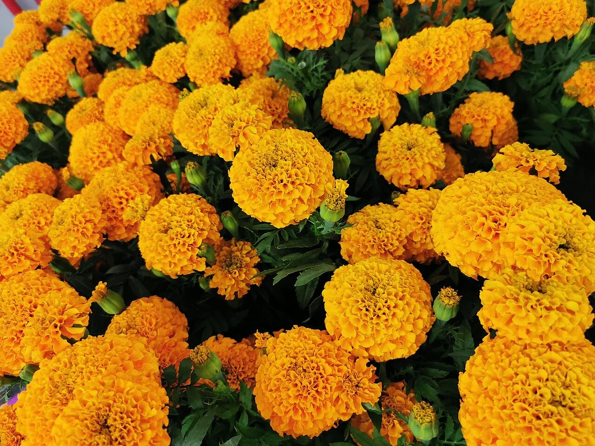

Sobre el Autódromo · la pista más alta del calendario
Donde
las velas
aceleran.
Pronóstico de qualy · Edición Día de Muertos. Gran Premio de la Ciudad de México, Autódromo Hermanos Rodríguez. Sábado 31 de octubre, 3:00 PM hora CDMX.
Faltan para la Q1
--horas
--minutos
--segundos
Por empezarCon FP1 + FP23:00 PM CDMX · 21:00 UTC
- Aciertos en el Top 10
- 8.21/10
- En la temporada 2026
- 8.78/10
- Orden completo
- 0.78
- Pole acertada
- 36%
Promedio en 66 GP con validación walk-forward
18 GP de este año
Correlación de Spearman con la qualy real
Veces que el P1 del modelo hizo la pole
Pronóstico · Top 10
La parrilla
de las ánimas
Así saldrían los diez primeros si la qualy se corriera con lo que sabemos hoy. La pole va adelante a la izquierda y el resto se escalona, como en la recta del Autódromo.
Probabilidades de 20 000 simulaciones de la qualy hechas por el modelo.Ver los 22 pilotos
Sección del estadio · Foro Sol
El Foro Sol
espera.
La recta, el estadio y una ciudad que esta noche pone ofrenda. Por la tarde, 22 autos y una sola vuelta que cuenta.
Los favoritos
Tres casas
para la pole
Ninguna igual. Mercedes y Ferrari se reparten casi toda la probabilidad de pole; Red Bull y McLaren esperan su vuelta.


La tabla completa
Los 22
Posición pronosticada, prácticas y probabilidades de cada piloto. La franja muestra el rango probable de su qualy (del 10 % al 90 % de las simulaciones) y las marcas naranjas son los cortes de Q1 y Q2.
| Pos | Piloto | FP1 | FP2 | FP3 | Rango | Pasa a Q3 | Top 3 | Pole |
|---|
Rango probable (P10–P90)Posición pronosticadaCortes en P10 y P16
En la burbuja
Velas
que tiemblan
Los cortes deciden la tarde: seis pilotos caen en Q1, seis en Q2 y sólo diez pelean la pole. Estos son los que el modelo ve más cerca de la orilla.
Frontera de Q3
Probabilidad de entrar a la Q3. La llama crece con la probabilidad.
Frontera de Q1
Rango probable de cada piloto. A la derecha de la línea rosa se queda fuera en Q1.

En vivo
Pronóstico
vs. qualy en vivo
Cada vuelta contra el pronóstico. Las flechas dicen cuántos lugares está cada piloto arriba o abajo de lo esperado, y el marcador cuenta los aciertos del Top 10.
–/10
Q1Q2Q3
- PolePendiente
- Caídos en Q1 previstos–
- Caídos en Q2 previstos–

Tras la FP3
Qué
cambió

Ofrenda
Las poles
del Autódromo
Diez qualys desde el regreso de la Fórmula 1 a México en 2015 (no hubo GP en 2020). Una vela por cada pole; las más altas son las más recientes.
- 2015ROSMercedes
- 2016HAMMercedes
- 2017VETFerrari
- 2018RICRed Bull
- 2019VERRed Bull
- 2021BOTMercedes
- 2022VERRed Bull
- 2023LECFerrari
- 2024SAIFerrari
- 2025NORMcLaren
Mercedes 3 · Ferrari 3 · Red Bull 3 · McLaren 1Verstappen es el único con dos poles aquí.
Cómo funciona
El modelo,
sin humo
Un pronóstico estadístico, no una corazonada. Se entrena con lo que pasó antes de cada fin de semana y se mide contra qualys reales que no vio.
Datos
Tiempos de prácticas de OpenF1 (2023 en adelante) y resultados históricos de Jolpica (2018 en adelante): promedios de qualy recientes, tasa de Q3, ritmo del equipo y la historia de cada piloto en México.
Modelo
Se probaron diez modelos y ganó un Random Forest. Luego simula la qualy 20 000 veces, sumando al pronóstico los errores que tuvo en la validación; de ahí salen las probabilidades de Q3, Top 3 y pole.
Validación
Walk-forward: cada GP se pronostica sólo con los GP anteriores, como si fuera ese sábado. Así se midieron 66 qualys de 2023 a 2026.
Lo que más pesa
- Promedio de qualy, últimos 10 GP22%
- Veces en Q3, últimos 10 GP11%
- Promedio de qualy, últimos 5 GP11%
- Promedio de qualy en 202610%
- Promedio del equipo, últimos 5 GP6%
- Promedio de qualy, últimos 3 GP5%
- Orden en la práctica principal3%
Importancia de cada variable en el Random Forest (suma de 62 variables = 100 %).
Contra la intuición
ModeloAciertos promedio en el Top 108.21
Ordenar por la FP2Lo que haría cualquiera viendo las prácticas7.64
Mejor vuelta de FP1 y FP2La vuelta más rápida de cada piloto7.62
Elegir el modelo mirando la misma validación lo favorece un poco: tómalo como una cota optimista. La diferencia contra las prácticas se mantiene en todos los modelos probados.